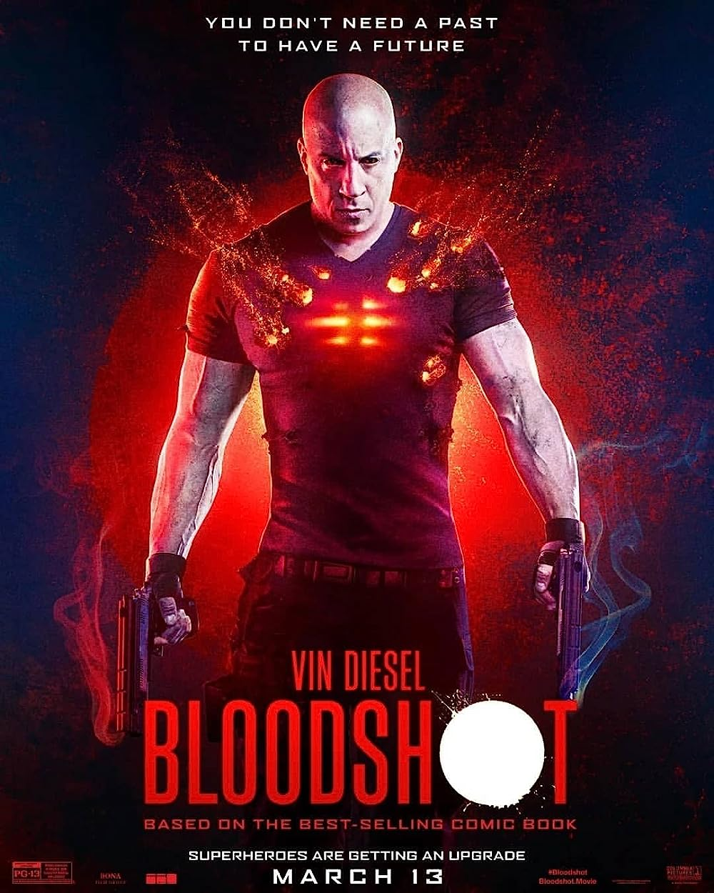

Bloodshot
Bloodshot is a 2020 American superhero film based on the Valiant Comics character of the same name. It is intended to be the first installment in a series of films set within a Valiant Comics shared cinematic universe.[3] Directed by David S. F. Wilson (in his feature directorial debut) from a screenplay by Jeff Wadlow and Eric Heisserer and a story by Wadlow,[4] the film stars Vin Diesel in the main role, Eiza González, Sam Heughan, Toby Kebbell, and Guy Pearce. It follows a soldier who was killed in action, only to be brought back to life with superpowers by an organization that wants to use him as a weapon.
Bloodshot was theatrically released in the United States on March 13, 2020, by Sony Pictures Releasing. The film grossed $37 million worldwide and received negative reviews from critics with criticism for Diesel's performance, but praise for the visual effects and action sequences. Due to the COVID-19 pandemic closing theaters across the globe, Sony made the film available digitally on-demand less than two weeks after it was released theatrically.